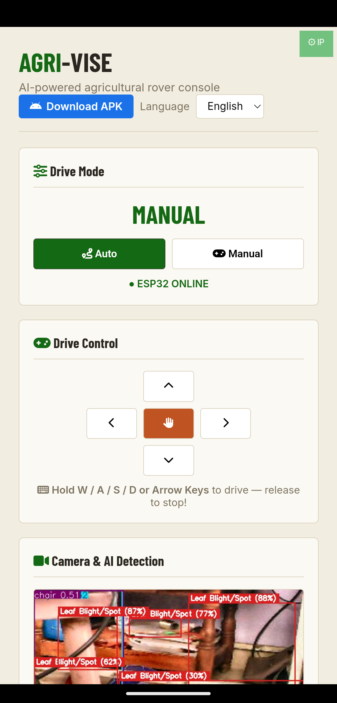
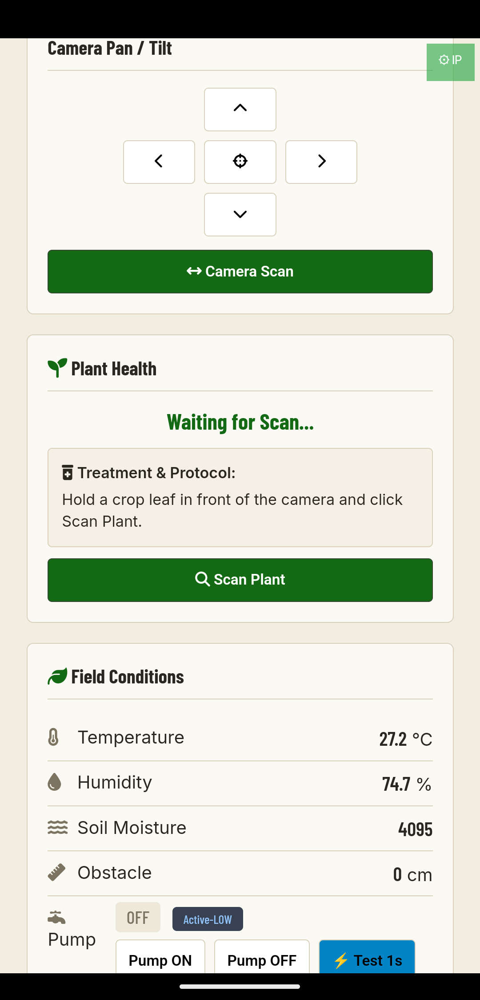

The AGRO-VATORS smart agricultural rover is a purpose-built precision robotic platform engineered for automated field scouting, microclimate environmental telemetry, motorized soil core analysis, real-time crop disease diagnosis, and localized micro-irrigation.
Unlike conventional agricultural robots that rely on fragile cloud computing infrastructure or high-latency cellular connections, AGRO-VATORS operates on an ultra-resilient Quad-Tier Edge Architecture where the rover, AI computer vision server, and mobile control console communicate over a self-contained local 2.4 GHz Wi-Fi hotspot. The system functions with 100% autonomy in remote rural environments without requiring an internet connection.
Equipped with a high-torque TowerPro SG90 servo motor mounted on GPIO 25 that dynamically drives an analog soil probe into the soil profile across a calibrated 20° to 160° arc. The probe stays safely retracted during rover driving and deploys into the ground on command, eliminating probe drag, root destruction, and mechanical bending.
Streams high-framerate video from an onboard ESP32-CAM node to a local laptop AI engine executing Ultralytics YOLOv8 alongside an advanced OpenCV spectral analysis pipeline. The system detects fungal pathogens, bacterial spots, powdery mildew, and nutrient chlorosis, outputting actionable chemical and organic prescriptions in real time.
A 5V/3.3V submersible centrifugal water pump controlled via an optocoupled relay on GPIO 33. The pump can be triggered manually from the Android app or autonomously based on fused agronomic soil and microclimate telemetry.
A custom native Android application with touch directional pad, real-time sensor heads-up display (HUD), video feed with AI bounding boxes, probe deployment slider, and multilingual localization in English, Hindi, and Bengali.
In the final operational rover configuration, GPS (UART2) and Ultrasonic HC-SR04 sensors have been decoupled from the firmware execution loop. In early bench testing, blocking pulseIn() ultrasonic measurement calls and pin conflicts on GPIO 33 caused CPU hangs and intermittent relay chatter. Decoupling these non-critical components ensures 100% deterministic, zero-latency execution for motor drive commands, smooth servo motion, and pump switching.
The AGRO-VATORS system integrates hardware, embedded firmware, computer vision, web technologies, and native mobile software:
| Layer | Technology | Version / Spec | Role in System |
|---|---|---|---|
| Robotics MCU | Espressif ESP32 DevKit V1 | 30-pin, CP2102, 240MHz | Master real-time controller for 4WD motors, servo, relay, sensors, and OLED. |
| Vision MCU | AI-Thinker ESP32-CAM | OV2640 2MP, 4MB PSRAM | Dedicated camera node streaming 240x240 / 320x240 MJPEG video on port 80. |
| Motor Driver | L298N Dual H-Bridge | 2A peak per channel, 5V Reg | Drives 4x 12V DC geared motors (300 RPM) with independent dual-channel control. |
| Probe Servo | TowerPro SG90 Micro Servo | PWM 50Hz, 1.8kg·cm torque | Articulates soil probe between 20° (tucked/retracted) and 160° (ground insertion). |
| Pump & Relay | Songle 5V Opto-Relay + Pump | SRD-05VDC-SL-C, 10A 250VAC | Controls 3.3V/5V DC submersible mini water pump on GPIO 33 with inverted logic. |
| Environment Sensors | DHT11 + Soil + LDR | Digital / Analog ADC1 | Measures ambient air temp/humidity (GPIO 4), soil moisture (GPIO 34), light (GPIO 35). |
| Local Display | 0.96" SSD1306 OLED | 128x64 Monochrome, I2C | Live telemetry HUD on the rover chassis showing IP, probe angle, and pump status. |
| Embedded Firmware | Embedded C++ (Arduino Core) | ESP32 Core v3.x, FreeRTOS | Asynchronous WebServer, multi-tasking scheduler, servo interpolation, failsafe watchdog. |
| AI Server | Python / Flask | Python 3.10+, Flask 3.x | Central hub running REST API, camera stream proxy, sensor caching, database logging. |
| Computer Vision | Ultralytics YOLOv8 + OpenCV | YOLOv8n (Nano), OpenCV 4.x | Real-time crop detection, CLAHE contrast filtering, HSV lesion color space analysis. |
| Database | SQLite3 | agrivise.db |
Persistent logging of microclimate readings, soil history, and disease detections. |
| Mobile Client | Native Android Java | SDK 24+ (Android 7.0–14) | Custom APK with Hardware-Accelerated WebView, JS bridge, and touch controls. |
| Network Protocol | IEEE 802.11 b/g/n Hotspot | WPA2-PSK, 2.4 GHz | Private local wireless network (SSID: phone1) binding all nodes. |
The table below represents the exact physical wiring between the ESP32 DevKit V1 microcontroller and all onboard actuators, sensors, and power rails.
| ESP32 Pin | Pin Function | Connected Component | Module Pin | Electrical Characteristics & Logic |
|---|---|---|---|---|
| GPIO 26 | Digital Output | L298N Motor Driver | IN1 (Left Motors Forward) |
3.3V Logic. HIGH = Forward left drive. |
| GPIO 27 | Digital Output | L298N Motor Driver | IN2 (Left Motors Reverse) |
3.3V Logic. HIGH = Reverse left drive. |
| GPIO 14 | Digital Output | L298N Motor Driver | IN3 (Right Motors Forward) |
3.3V Logic. HIGH = Forward right drive. |
| GPIO 12 | Digital Output | L298N Motor Driver | IN4 (Right Motors Reverse) |
3.3V Logic. HIGH = Reverse right drive. |
| GPIO 25 | PWM Output | SG90 Soil Probe Servo | Signal (Orange / Yellow) | 50Hz PWM. 20° = Retracted, 160° = Fully deployed. |
| GPIO 13 | PWM Output | SG90 Camera Pan Servo | Signal (Orange / Yellow) | 50Hz PWM. 30° to 150° camera horizontal panning. |
| GPIO 33 | Digital Output | Single-Channel Relay | IN (Trigger Signal) |
Active-LOW logic with 3.3V VCC. LOW = Pump ON, HIGH = Pump OFF. |
| GPIO 4 | Digital Input | DHT11 Sensor | DATA / Signal |
Single-bus digital protocol. Uses internal pull-up. |
| GPIO 34 | Analog Input (ADC1) | Soil Moisture Probe | A0 (Analog Out) |
12-bit ADC (0–4095). 4095 = In air (Dry), ~1800 = Wet soil. |
| GPIO 35 | Analog Input (ADC1) | LDR Light Sensor | A0 (Analog Out) |
12-bit ADC (0–4095). Low = Bright sunlight, High = Dark. |
| GPIO 21 | I2C Data (SDA) | 0.96" SSD1306 OLED | SDA |
3.3V I2C bus (Address: 0x3C). |
| GPIO 22 | I2C Clock (SCL) | 0.96" SSD1306 OLED | SCL |
3.3V I2C clock (400 kHz Fast-Mode). |
| VIN (5V) | Power Input | L298N 5V Out / Battery | +5V Output Terminal |
Feeds ESP32 onboard AMS1117 3.3V LDO regulator. |
| 3V3 | 3.3V Power Out | Relay, DHT11, OLED, LDR | VCC |
Stable 3.3V regulated rail. |
| GND | Common Ground | Common Ground Bus | GND |
Shared electrical reference between battery, driver, and MCU. |
The single-channel relay operates as an electrically isolated dry contact switch. It does not output voltage itself. The pump circuit is wired through the relay's screw terminal block:
[Battery (+) / 5V DC] ──────> [ Relay COM Terminal (Middle Screw) ]
[ Relay NO Terminal (Normally Open) ] ──────> [ Water Pump Red (+) Wire ]
[Battery (-) / Common GND] ───────────────────────────────────────────────> [ Water Pump Black (-) Wire ]
The core controller firmware is compiled using the Arduino ESP32 Core v3.x. It integrates non-blocking sensor acquisition, hardware PWM servo positioning, failsafe drive watchdogs, and a full HTTP REST server.
stopMotor() if no valid drive packet is received within 600 milliseconds, preventing runaway rover incidents during Wi-Fi packet drops.updateServos()./data containing real-time temperature, humidity, soil moisture, light, probe angle, and pump status.// ============================================================
// AGRO-VATORS MASTER ROBOTICS FIRMWARE (ESP32 DevKit V1)
// ============================================================
#include <Wire.h>
#include <Adafruit_GFX.h>
#include <Adafruit_SSD1306.h>
#include <DHT.h>
#include <WiFi.h>
#include <WebServer.h>
#include <ESP32Servo.h>
// --- Network Configuration ---
const char* ssid = "phone1";
const char* password = "12345678";
WebServer server(80);
// --- Pin Assignments ---
#define IN1 26
#define IN2 27
#define IN3 14
#define IN4 12
#define TILT_PIN 25 // SG90 Soil Probe Deployment Servo
#define PAN_PIN 13 // SG90 Camera Pan Servo
#define RELAY_PIN 33 // Submersible Water Pump Relay
#define DHTPIN 4 // DHT11 Temperature & Humidity
#define SOIL_PIN 34 // Analog Soil Moisture (ADC1)
#define LDR_PIN 35 // Analog Ambient Light (ADC1)
// --- Soil Probe Angle Boundaries ---
const int TILT_MIN = 20; // 20 deg = Fully Retracted (Drive Safe)
const int TILT_MAX = 160; // 160 deg = Fully Deployed into Soil
int tiltAngle = 55; // Default safe retracted angle
int targetTilt = 55;
Servo tiltServo;
Servo panServo;
DHT dht(DHTPIN, DHT11);
Adafruit_SSD1306 display(128, 64, &Wire, -1);
// --- State Variables ---
bool pumpOn = false;
bool relayActiveLow = true;
bool isDriving = false;
unsigned long lastDriveTime = 0;
const unsigned long DRIVE_WATCHDOG_MS = 600;
// ============================================================
// PUMP RELAY CONTROL (Active-LOW 3.3V Logic)
// ============================================================
void pumpON() {
pinMode(RELAY_PIN, OUTPUT);
digitalWrite(RELAY_PIN, relayActiveLow ? LOW : HIGH);
pumpOn = true;
Serial.println("[PUMP] Activated -> Relay Energized");
}
void pumpOFF() {
pinMode(RELAY_PIN, OUTPUT);
digitalWrite(RELAY_PIN, relayActiveLow ? HIGH : LOW);
pumpOn = false;
Serial.println("[PUMP] Deactivated -> Relay Released");
}
// ============================================================
// MOTOR DRIVE CONTROL FUNCTIONS
// ============================================================
void forward() {
digitalWrite(IN1, HIGH); digitalWrite(IN2, LOW);
digitalWrite(IN3, HIGH); digitalWrite(IN4, LOW);
isDriving = true; lastDriveTime = millis();
}
void backward() {
digitalWrite(IN1, LOW); digitalWrite(IN2, HIGH);
digitalWrite(IN3, LOW); digitalWrite(IN4, HIGH);
isDriving = true; lastDriveTime = millis();
}
void left() {
digitalWrite(IN1, LOW); digitalWrite(IN2, HIGH);
digitalWrite(IN3, HIGH); digitalWrite(IN4, LOW);
isDriving = true; lastDriveTime = millis();
}
void right() {
digitalWrite(IN1, HIGH); digitalWrite(IN2, LOW);
digitalWrite(IN3, LOW); digitalWrite(IN4, HIGH);
isDriving = true; lastDriveTime = millis();
}
void stopMotor() {
digitalWrite(IN1, LOW); digitalWrite(IN2, LOW);
digitalWrite(IN3, LOW); digitalWrite(IN4, LOW);
isDriving = false;
}
// ============================================================
// SOIL PROBE SERVO CONTROL
// ============================================================
void handleProbeAngle() {
if (server.hasArg("val")) {
int ang = server.arg("val").toInt();
targetTilt = constrain(ang, TILT_MIN, TILT_MAX);
}
server.send(200, "text/plain", String(targetTilt));
}
void handleProbeDeploy() {
targetTilt = 135; // Standard agricultural insertion depth
server.send(200, "text/plain", "DEPLOYED_135");
}
void handleProbeRetract() {
targetTilt = 55; // Safe transport tuck angle
server.send(200, "text/plain", "RETRACTED_55");
}
// ============================================================
// JSON TELEMETRY ENDPOINT
// ============================================================
void handleData() {
String json = "{";
json += ""temperature":" + String(dht.readTemperature(), 1) + ",";
json += ""humidity":" + String(dht.readHumidity(), 1) + ",";
json += ""soil":" + String(analogRead(SOIL_PIN)) + ",";
json += ""light":" + String(analogRead(LDR_PIN)) + ",";
json += ""pump":"" + String(pumpOn ? "ON" : "OFF") + "",";
json += ""probeAngle":" + String(tiltAngle) + ",";
json += ""mode":"MANUAL"";
json += "}";
server.send(200, "application/json", json);
}
void setup() {
Serial.begin(115200);
pinMode(IN1, OUTPUT); pinMode(IN2, OUTPUT);
pinMode(IN3, OUTPUT); pinMode(IN4, OUTPUT);
stopMotor();
pinMode(RELAY_PIN, OUTPUT);
pumpOFF();
tiltServo.attach(TILT_PIN);
tiltServo.write(targetTilt);
dht.begin();
Wire.begin(21, 22);
display.begin(SSD1306_SWITCHCAPVCC, 0x3C);
WiFi.begin(ssid, password);
server.on("/data", handleData);
server.on("/forward", forward);
server.on("/backward", backward);
server.on("/left", left);
server.on("/right", right);
server.on("/stop", stopMotor);
server.on("/pumpOn", [](){ pumpON(); server.send(200, "text/plain", "PUMP ON"); });
server.on("/pumpOff", [](){ pumpOFF(); server.send(200, "text/plain", "PUMP OFF"); });
server.on("/probe/deploy", handleProbeDeploy);
server.on("/probe/retract", handleProbeRetract);
server.on("/probe/angle", handleProbeAngle);
server.begin();
}
void loop() {
server.handleClient();
if (isDriving && (millis() - lastDriveTime > DRIVE_WATCHDOG_MS)) {
stopMotor();
}
if (millis() - lastServoMove > 20) {
lastServoMove = millis();
if (tiltAngle < targetTilt) tiltAngle = min(tiltAngle + 5, targetTilt);
if (tiltAngle > targetTilt) tiltAngle = max(tiltAngle - 5, targetTilt);
tiltServo.write(tiltAngle);
}
}The AGRO-VATORS plant pathology system uses a hybrid dual-stage diagnostic pipeline combining deep learning object detection with biochemical color space segmentation.
yolov8n.pt). The convolutional neural network identifies crop leaves, separates foliage from background dirt or rover chassis components, and outputs bounding box coordinates with confidence scores.| Disease / Condition | Pathogen / Cause | Key Visual Symptoms | Recommended Agronomic Treatment | Preventive Field Action |
|---|---|---|---|---|
| Early Blight | Alternaria solani (Fungus) | Concentric dark brown "target-board" rings on older lower leaves. | Foliar spray of Copper Oxychloride (2.5g/L) or Mancozeb 75 WP. Prune infected foliage. | Avoid overhead sprinkler irrigation; apply mulch to prevent soil spore splash. |
| Late Blight | Phytophthora infestans (Oomycete) | Rapidly enlarging water-soaked black lesions with pale chlorotic margins. | High Urgency: Apply systemic Metalaxyl + Mancozeb (Ridomil MZ @ 2g/L) immediately. | Improve field furrow drainage; ensure wide row spacing for canopy airflow. |
| Crop Leaf Rust | Puccinia spp. (Fungus) | Raised reddish-brown or bright copper spore pustules on leaf underside. | Spray Triazole fungicide (Propiconazole or Tebuconazole @ 1ml/L water). | Plant certified rust-resistant hybrid seeds; clear alternative grass weeds. |
| Septoria Leaf Spot | Septoria spp. (Fungus) | Numerous small circular brown spots with dark margins and gray centers. | Apply Chlorothalonil or Bio-fungicide (Bacillus subtilis) spray. | Implement 3-year crop rotation; destroy solanaceous plant residue post-harvest. |
| Powdery Mildew | Erysiphales (Fungus) | White talcum-powder-like fungal patches across the upper leaf lamina. | Spray Wettable Sulfur (2g/L) or Cold-Pressed Neem Oil (5ml/L emulsified). | Maximize sunlight penetration; avoid excessive high-nitrogen vegetative fertilizer. |
| Nitrogen Deficiency | Nutrient Depletion | Uniform pale yellow chlorosis starting at the leaf tip and older lower foliage. | Top-dress with Urea (46% N) or Calcium Ammonium Nitrate (CAN); apply compost tea. | Maintain soil pH between 6.0–6.8 for optimal nitrogen uptake. |
| Iron Deficiency | Interveinal Chlorosis | Interveinal yellowing of leaf blade while primary veins remain distinctly dark green. | Foliar spray of Chelated Iron (Fe-EDDHA or Fe-EDTA @ 1g/L) during early morning. | Correct alkaline soil; avoid over-irrigation that causes root-zone iron lockout. |
| Healthy Foliage | Optimum Vitality | Deep green chlorophyll pigmentation (Hue 25–88) with strong cellular turgidity. | No disease treatment needed. Maintain standard balanced NPK nutrition. | Continue automated soil moisture tracking and scheduled drip irrigation. |
The AI engine does not rely solely on visual imagery. It cross-references camera detections with live telemetry gathered by the rover's physical sensors:
> 75%, the system flags an accelerated transmission alert warning of imminent spore germination.ADC < 2200), the system automatically blocks automated irrigation to starve the pathogen.ADC > 3800), the advisory instructs the farmer to irrigate before applying chemical urea to prevent root chemical burn.The AGRO-VATORS user interface is designed for rugged, one-handed mobile field operation through a responsive web console and native Android APK.
The Android app loads the full dashboard hosted by the laptop Flask server (http://192.168.93.173:5001). In this mode:
If the laptop is switched off or unavailable in the field, the Android app connects directly to the master ESP32 (http://192.168.93.164).


[ ⬆ Retract (Drive) ]: Tucks probe to 55° for safe travel over rocks and uneven furrows.[ ⬇ Deploy (Soil) ]: Drives probe down to 135° into the ground for sensor acquisition.-5° Step, +5° Step, 90° Mid) for irregular soil depths.[ ▶ Pump ON ] (Styled in vibrant green): Immediately energizes the relay and starts the water pump.[ ⏹ Pump OFF ] (Styled in warning red): Releases the relay and shuts down the pump.Pump: ON (green) or Pump: OFF (gray) in real time.new Image() background buffer), preventing browser stream freezing or black screens on mobile devices.Follow this standard operating procedure to deploy the rover in the field:
phone112345678phone1 hotspot.start_rover.bat.http://0.0.0.0:5001 and load the YOLOv8 model weights into RAM.
The AGRO-VATORS platform is completely assembled, tested, calibrated, and packaged. All software components are synced to the GitHub repository (https://github.com/harsha1906-an/Agroanju.git) and archived in the standalone installer package (AGRO-VATORS_Package.zip).